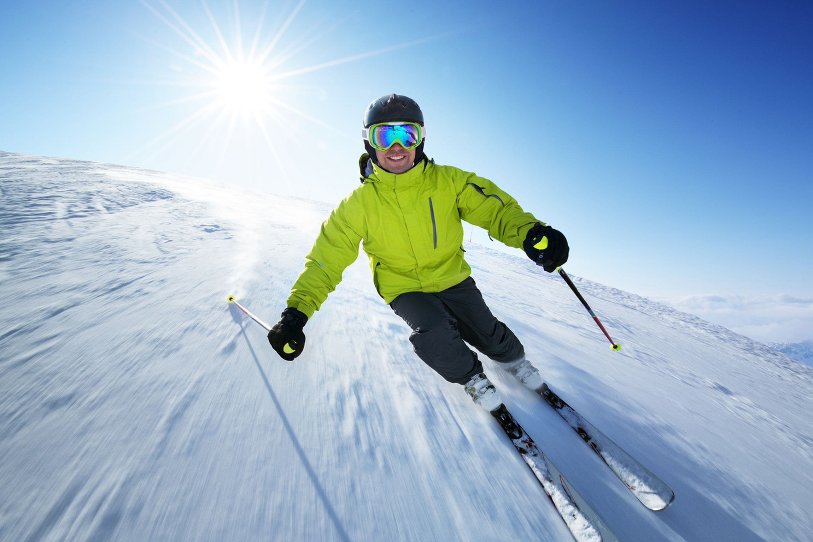

THE FORBIDDEN RIDGE
Crazy road
Lucas shot down the forbidden ridge, snow spraying like sparks. A hidden rock launched him into the air—too high, too far. For one breathless second he thought he was done... then his board stemmed down, wobbling but holding. Heart racing, he laughed into the wind. He hadn't just survived—he'd conquered the mountain.
